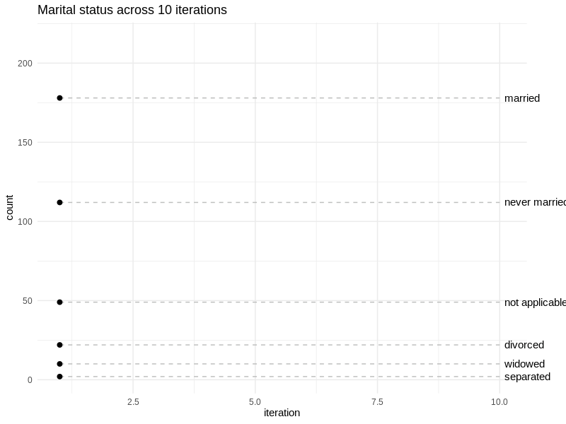

It is recommended that you use RStudio as your R IDE which can be downloaded for free from this link. dymium heavily relies on the data.table package for data operations and the R6 package for creating and extending classes. It is recommended that you get yourself familiar with those two packages. However, it should be quite straight forward to see how they are being used in the getting started guide. So feel free to go on and read the rest of the guide! :) and also to let me know how I can improve this so that you can better understand dymium.
This tutorial is a quick start guide to build your first microsimulation model pipeline with dymium.
# the lines below install the `remotes` package if it is not already installed.
if (!require("remotes")) {
install.packages("remotes")
}
# this install the `dymium` package from its github repo.
remotes::install_github("dymium-org/dymium")By install the dymium package it will automatically install other dymium packages such as dymiumCore and dymiumGUI as part of its dependencies. Basically, the dymium package act as a master package that when it is loaded it loads all other dymium packages, like the tidyverse package.
In dymium, a ‘world’ object contains everything from representations of entities (eg: individuals, households, residential building, firms, and so on) to the rules (eg: probabilistic models, rates, exogenous variables, etc) that the entities of your world object follow.
Hence, to create your first dymium model you must first prepare your world and add your entities and rules that they will follow.dymiumCore provides four toy datasets which are individuals, households, residential buildings and zones. All of them are linkable by the id columns. All individuals belong to households, all households occupy residential buildings, all residential buildings are in the zones.
Let’s create a world object.
library(dymium)
#> + dymiumCore 0.0.10 Date: 2019-11-30
#> R: 3.6.1
#> OS: Ubuntu 16.04.6 LTS
#> GUI: X11
#>
#>
world <- World$new()World$new() is a [R6::R6Class] constructor, a constructor is a class method that creates an object of that class. So the line above creates a World object and assign it as world to your global environment. Now, your newly created world is still emptied. So we are going to add individuals into it using the toy_individuals dataset from dymiumCore.
To add individuals into world and you must first create an [Individual] object. The [Individual] class is provided by dymiumCore, it contains methods that help you to access and modify microdata of individuals such as the toy_individuals data. To see what methods and fields are available put ?Individual into your R console and press enter.
Ind <- Individual$new(.data = toy_individuals, id_col = "pid")
Ind
#> Class: Individual
#> Inheritance: Individual <- Agent <- Entity <- Generic <- R6
#> Number_of_entities: 373
#> Number_of_removed_entities: 0
#> Data[rows, cols]: attrs[373, 8]By calling Ind it returns some useful information about the object such as the number of entities of class Individual and the inheritance structure.
Now let’s add Ind into world using world’s add method.
world$add(Ind, name = "Individual")
#> [16:21:43] WARN dymiumCore world$add: The given `name` will be ignored since the object in x is of a Dymium class object. The classname of the object will be used as its name.
#> [16:21:43] INFO dymiumCore world$add: Adding an Entity object 'Individual' to Entities.You can see from the warning message above that name is not needed when adding an Entity class to world since it will use the name of the class as the name of the added object. However, when you add a model object the name argument must be specified. Currently, only one instance of each Entity class can be added to world since there is no obvious benefit to adding multiple instances of the same class to world since it is probably easier and clearer just to combine them as one instance.
Now that your world contains Individual agents we may want to introduce some rules so that we can start to microsimulate something!
Let’s microsimulate changes in marital status of the Individual agents.
Using toy_individuals as the data to estimate a marital status model with the caret package. By default, caret will fit a random forest model if the method argument in train is not specified.
library(caret)
#> Loading required package: lattice
#> Loading required package: ggplot2
marital_status_model <- train(marital_status ~ age + sex,
data = toy_individuals)
#> note: only 1 unique complexity parameters in default grid. Truncating the grid to 1 .Add the model to world and assign its key as “marital_status_model”.
world$add(marital_status_model, name = "marital_status_model")
#> [16:21:49] INFO dymiumCore world$add: Adding a Model object 'marital_status_model' to Models.Create an event function for changes in marital status.
event_demography_maritalStatus <- function(world) {
# get the stored Individual object from `world`
Ind <- world$get("Individual")
# get the stored marital status model object from `world`
# unpack it with `$get()`
model <- world$get("marital_status_model")$get()
# create a TransitionClassification object to perform a simulation using the model
# on the individual agents.
TransMaritalStatus <- TransitionClassification$new(Ind, model)
# update the `marital_status` column of the individual agents using the simulated
# result
TransMaritalStatus$update_agents("marital_status")
# end of event must returns the input world object which now contains the updated
# individual agents.
return(world)
}Since the marital status model uses age of the individual as an explanatory variable we make all individuals aged one year more every iteration
event_demography_age <- function(world) {
# get the stored Individual object from `world`
Ind <- world$get("Individual")
# increase age of all individuals by one
# note that in R 1L is integer while 1 is numeric.
Ind$get_data(copy = FALSE)[, age := age + 1L]
return(world)
}When calling the get_data method of an Entity class and specify copy as FALSE the reference to the data will be returned hence allows the data to be updated in place/by reference. If copy is TRUE or not given a copy of the data will be returned hence any mofification to that data wouldn’t change the data of those entities.
Now, build a microsimulation pipeline to run for 10 iterations and store some statistics at the end of each iteration for visualisation later.
count_ls <- list()
for (i in 1:10) {
world$start_iter(time_step = i, unit = "year") %>%
event_demography_age() %>%
event_demography_maritalStatus()
# record the count of households by zone in each iteration
count_ls[[i]] <-
world$get("Individual")$get_data()[, .(count = .N, iteration = i), marital_status]
}
#> [16:21:49] INFO dymiumCore world$start_iter: Starting year: 1
#> [16:21:49] INFO dymiumCore world$start_iter: Starting year: 2
#> [16:21:49] INFO dymiumCore world$start_iter: Starting year: 3
#> [16:21:49] INFO dymiumCore world$start_iter: Starting year: 4
#> [16:21:49] INFO dymiumCore world$start_iter: Starting year: 5
#> [16:21:49] INFO dymiumCore world$start_iter: Starting year: 6
#> [16:21:49] INFO dymiumCore world$start_iter: Starting year: 7
#> [16:21:49] INFO dymiumCore world$start_iter: Starting year: 8
#> [16:21:49] INFO dymiumCore world$start_iter: Starting year: 9
#> [16:21:49] INFO dymiumCore world$start_iter: Starting year: 10Create a visualisation to show how the distribution of marital status changes over the course of the simulation.
library(data.table)
library(ggplot2)
library(gganimate)
#>
#> Attaching package: 'gganimate'
#> The following object is masked from 'package:dymiumCore':
#>
#> Transition
count <- rbindlist(count_ls)
anim <-
ggplot(count, aes(iteration, count, group = marital_status)) +
geom_line() +
geom_segment(aes(xend = 10, yend = count), linetype = 2, colour = 'grey') +
geom_point(size = 2) +
geom_text(aes(x = 10.1, label = marital_status), hjust = 0) +
coord_cartesian(clip = 'off') +
transition_reveal(iteration) +
theme_minimal() +
labs(title = "Marital status across 10 iterations") +
theme(plot.margin = margin(5.5, 40, 5.5, 5.5))
animate(anim, width = 800, height = 600, res = 100)